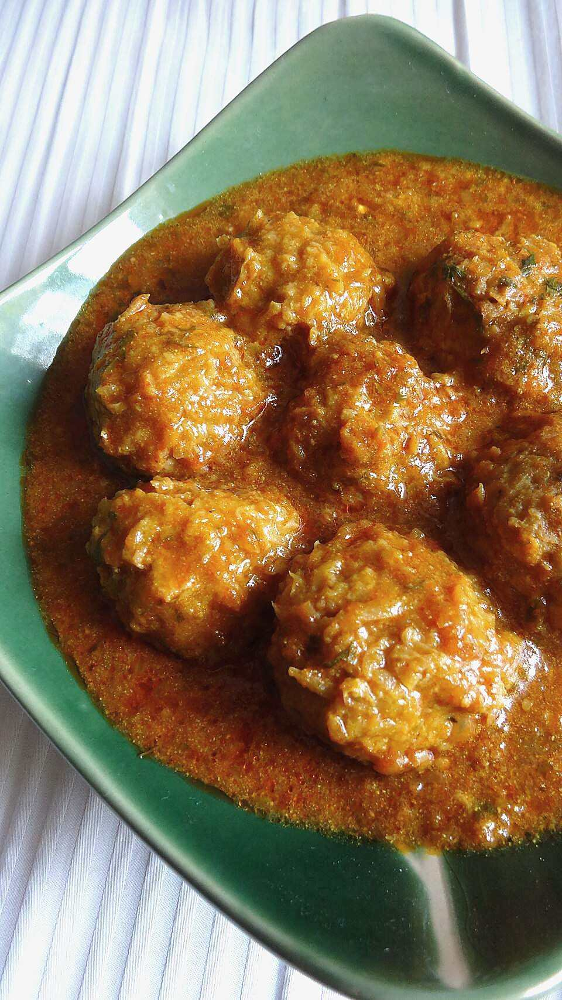

Lauki Kofta
grated bottle gourd dumplings bound with besan, sitting in a plain onion-tomato gravy

Contains: milk
Ingredients
Quantities for 4.
- 600g, peeled and grated Bottle Gourd
- 6 tbsp Besanmore only if the mix will not hold
- 1 tbsp Rice Flourkeeps the koftas crispoptional
- 3cm, grated, half for the koftas Ginger
- 3, finely chopped Green Chilli
- 5 tbsp, chopped Coriander Leaves
- 500ml for frying, plus 3 tbsp for the gravy Neutral Oil
- 3 medium, roughly chopped Onion
- 4 medium, roughly chopped Tomato
- 8 cloves Garlic
- 80g, whisked Yogurt
- 3 tbsp Creamto finishoptional
- 1 tsp Cumin Seeds
- 1/2 tsp Turmeric
- 1.5 tsp Kashmiri Chilli
- 2 tsp Coriander Powder
- 1 tsp Cumin Powder
- 1 tsp Garam Masala
- 1 tbsp, crushed Kasuri Methi
- to taste Salt
- 400ml, hot Water
Cookware
kadhai, blender, stovetop
Checked against the ingredient list for ten allergens: milk, egg, fish, crustaceans, tree nuts, peanuts, sesame, mustard, soy and gluten. Brands vary, so read the label on anything new to you.
Before you start
- Grate the lauki and salt it for 20 minutes, then squeeze it dry over a bowl. Keep the squeezed juice. It goes into the gravy instead of plain water.
- Mix the kofta batter only just before frying. Left standing, the lauki weeps again and the mix goes slack.
- Fry the koftas and make the gravy separately, and combine them only 10 minutes before serving or they disintegrate.
Method
- Squeeze the salted grated lauki hard, reserving the liquid. Mix the pulp with the besan, rice flour, half the grated ginger, the green chillies, 3 tbsp coriander leaves and salt into a mix that just holds a ball.Add besan a tablespoon at a time. Too much and the koftas turn into hard besan balls.
- Heat the frying oil to 170C. Test with one kofta: it should sink, then rise in about 20 seconds without falling apart.If the test kofta breaks up, work in another tablespoon of besan before frying the rest.
- Roll walnut-sized balls and fry 6-7 at a time for 4-5 minutes to a deep even brown. Drain on paper.
- Blend the onion, garlic and remaining ginger to a coarse paste, and separately blend the tomatoes to a puree.
- Heat 3 tbsp oil in a kadhai, crackle the cumin, then add the onion paste and fry 12 minutes on medium until it is golden and no longer smells raw.
- Add the turmeric, kashmiri chilli, coriander and cumin powders and fry 1 minute with a splash of water.
- Add the tomato puree and salt and cook 10-12 minutes until it thickens and the oil separates cleanly.
- Lower the heat, beat in the whisked yogurt spoon by spoon, then cook 3 minutes.The pan must be off a hard boil when the yogurt goes in, or it will curdle.
- Add the reserved lauki liquid made up to 400ml with hot water. Simmer 8 minutes until the gravy is smooth and coats a spoon.
- Stir in the cream, crushed kasuri methi and garam masala. Slide the koftas in, cover and let them sit off the heat for 8 minutes to soak.Do not boil the koftas in the gravy. They will fall apart. Off the heat is enough.
- Scatter the remaining coriander over and serve with roti or jeera rice.
Storage
Store the koftas and gravy separately for up to 3 days refrigerated, combining only when reheating. Combined, they go mushy overnight. The gravy freezes 2 months; the koftas do not.
Nutrition Good estimate
Medium protein: 12 g a serving, 11% of the calories
| Per serving558 g | Per 100 g | |
|---|---|---|
| Calories | 421 kcal | 76 kcal |
| Protein | 11.5 g | 2 g |
| Carbohydrate | 42.1 g | 8 g |
| of which sugars | 11.0 g | 2 g |
| Fibre | 8.8 g | 2 g |
| Fat | 25.1 g | 4 g |
| of which saturated | 5.2 g | 1 g |
| of which unsaturated | 18.2 g | 3 g |
Nearest database match used for garam masala. Estimated from raw ingredients using USDA FoodData Central.
More like this: Vegetarian Indian recipes · Gluten-free Indian recipes · Punjabi recipes
Times, yields, allergens and nutrition are guidance. Use your own judgement on doneness and on storing. More in About.